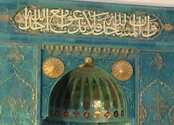
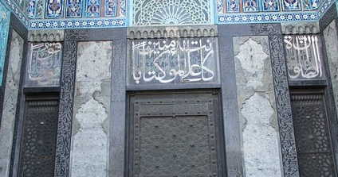
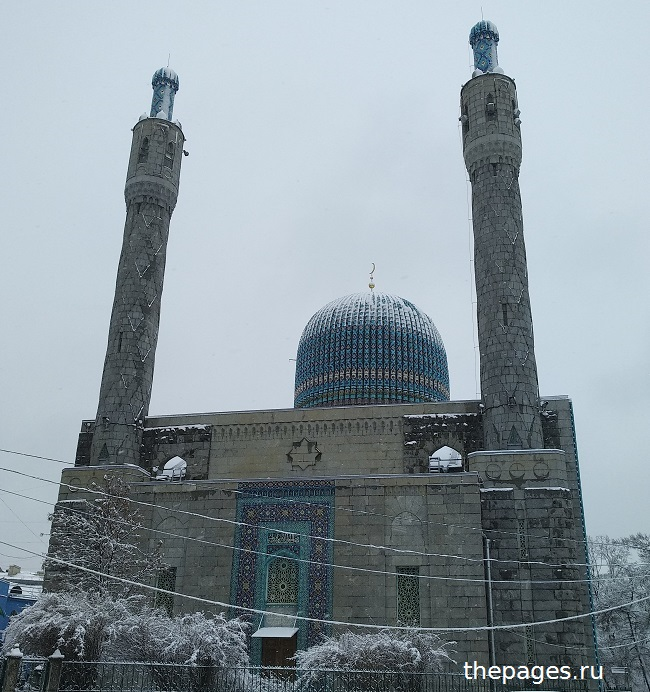

بسم الله الرحمن الرحيم
Все молитвы и поклонение только одному Аллаху
Над михрабом (нишей для имама) в Соборной мечети Петербурга (около метро Горьковская) написан аят из Священного Корана.
В нём говорится, что мечети принадлежат Аллаху, и что запрещено взывать в молитве к кому-либо, кроме Аллаха. Это 18-й аят из суры "Джинны".
"И не взывайте наряду с Аллахом к кому-либо!"

Определённое время для обязательных намазов
Над западным входом в Соборную мечеть написан другой аят из Священного Корана. В котором говорится, что
обязательные намазы предписаны верующим в определённые Всевышним Аллахом времена суток. "Истинно намазы предписаны верующим в определённое время."
Это конец 103-го аята из суры "Женщины". Примечательно, что слова этого
аята разделены на три части: начало над правым окошком, средняя часть
над дверью, а конец над левым окошком.

И один и другой аяты нанесены на стены мечети ещё при строительстве
мечети до революции 1917 года, о чём свидетельствуют исторические
фотографии.
См. также:
В начале слава Всевышнему

В начале воздадим хвалу и славу нашему Щедрому и Милостивому Создателю, Господу вселенной и всех миров.
Вся хвала и вся слава одному Аллаху, Хозяину мироздания, Господу
великого Трона, Милостивому, Владыке дня Суда, Святому Царю всех
творений!
Только Ему одному надлежит поклоняться, только к Нему Единственному
надлежит обращаться в молитве, ведь Он Всеслышащий, Всевидящий,
Всезнающий, Всемогущий, Отвечающий тем, кто Его восхваляет.
Сегодня день 8 рамадана
1444 года. Это четверг, день которого соответствует 30 марта 2023 года. С
наступлением ночи после полного захода солнечного диска за линию
горизонта в мусульманском календаре
наступает следующая дата. То есть, например, сегодня после захода солнца
будет уже 9-я ночь рамадана. А 1444 год - это столько лунных лет по 12
лунных месяцев каждый прошло с года переселения
посланника Аллаха ко всему человечеству из Благословенной Мекки в
Лучезарную Медину.
Мусульманский год основывается на фазах луны и короче одного солнечного
цикла на Земле в среднем на 11 суток. Поэтому рамадан и курбан-байрам
постепенно смещаются по сезонам.
Ещё несколько лет назад мусульмане северного полушария постились летом, а
сейчас постятся уже весной.
Про месяцы исламского лунного календаря, их порядок и названия можно прочитать
здесь.
См. так же: Смысл жизни в том, чтобы быть послушным рабом Аллаха.
Некоторые важные общеизвестные запреты в исламе. Положение мусульман сегодня.
В чём смысл жизни человека
Всевышний Создатель создал человека, чтобы человек подчинялся Ему,
вёл себя как Его раб, то есть поклонялся и служил только Ему Одному и
взывал в молитве только к Нему. И это логично, ведь Он нас создал, и Он
единственный Хозяин вселенной. Только Он единственный истинный Бог.
А что нам наш Творец предписал делать, и чего не делать, и во что
верить - это написано в Коране. От этого зависит судьба человека в
вечности:
или вечные райские блаженства, или вечные мучения в адском Огне.
Все люди умрут, потом будут воскрешены на Суд. А по результатам Суда
или Рай, или Ад. В Раю много уровней. Чем праведнее человек,
тем на более высокий уровень он попадает по милости Всевышнего. И вся
хвала и слава одному Аллаху - Хозяину и Господу всех миров!
Если это интересует, то читайте здесь.
2 октября 2022 года, понедельник, 22:22
بسم الله الرحمن الرحيم
Из особенностей арабского языка и менталитета
Во имя Аллаха Милостивого. С именем Его начну.
Вся хвала и слава, молитвы и поклонение одному Аллаху Хозяину и Господу всех
миров: больших и маленьких, видимых и невидимых.
Из особенностей арабского языка и менталитета называть что-либо по его
отличительной черте, даже если она не является доминирующей. Например, самая
длинная сура в Священном Коране называется الْبَقَرَة -
"Корова", потому что только в ней из всех 114-ти сур этой мудрой и
благословенной книги есть история про корову, которую было приказано принести в
жертву потомкам пророка Исраиля, мир ему. Хотя этот рассказ про корову является
лишь небольшой частью этой великой суры.
والحمد لله رب العالمين
Первые 10 дней зуль-хиджжа 1445 года, четверг
Правильная религия
Правильная религия это ислам или покорность Аллаху - Создателю и Хозяину всех миров.
23 июля 2022 года, суббота
Ислам
Ислам это религия покорности Всевышнему Хозяину, Господу всех миров и Создателю всех творений.
Первым и главным предписанием является абсолютный монотеизм, или единобожие, когда все виды поклонения (мольба, намаз, пост, милостыня,
хадж, страх, надежда, любовь и др.) направлены только к одному Аллаху. Без этого человек не может быть мусульманином.
Цитаты с сайта ДУМ Северной Осетии
© almuslim.net 2026, (islam-spb.ru 2022-2025)